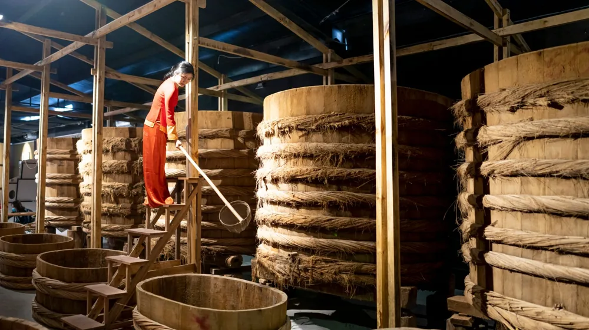

차 없이도 충분해! 대중교통으로 가는 전통주 양조장 베스트 3
사진: J MAD / Pexels (무료 이미지, 출처 표기)
차 없이 떠나는 양조장 투어, 대중교통이 더 좋은 이유

전통주 양조장 여행을 계획할 때 가장 먼저 하는 고민은 '운전'입니다. 양조장 투어의 핵심인 '시음'을 제대로 즐기려면 일행 중 누군가는 술을 마시지 못하고 운전대를 잡아야 하기 때문입니다. 대중교통을 이용하면 이런 눈치싸움 없이 모두가 함께 신선한 술을 맛볼 수 있습니다.
최근에는 도심에서 가까운 곳뿐만 아니라, 지방에 위치한 유서 깊은 양조장들도 KTX나 시외버스를 통해 어렵지 않게 방문할 수 있는 인프라가 갖춰졌습니다. 운전대를 내려놓고 기차 창밖 풍경을 보며 설레는 마음으로 떠나는 대중교통 양조장 여행지 3곳을 정리해 드립니다.
대중교통 접근성이 뛰어난 추천 양조장 3곳
자가용 없이도 버스와 지하철, 기차를 이용해 비교적 수월하게 찾아갈 수 있는 대표적인 양조장들입니다. 각 양조장의 특징과 대중교통 이용 방법을 표로 한눈에 비교해 보세요.
1. 느린마을양조장 양재본점: 도심형 양조장의 선두주자로, 멀리 떠나기 부담스러운 분들에게 안성맞춤입니다. 매장에서 직접 빚는 신선한 막걸리를 효모의 활성화 단계(봄, 여름, 가을, 겨울)에 따라 다양하게 즐길 수 있습니다.
2. 당진 신평양조장: 1933년부터 3대째 이어져 온 역사 깊은 곳입니다. 사전에 예약하면 백련 양조 문화원에서 전통주 빚기 체험과 시음을 함께 즐길 수 있습니다. 서울 남부터미널이나 동서울터미널에서 기지시리행 버스를 타면 쉽게 접근할 수 있습니다.
3. 국순당 횡성공장 (주향로): 우리 술의 역사와 제조 과정을 체계적으로 볼 수 있는 견학로가 잘 마련되어 있습니다. KTX 강릉선을 타고 둔내역에 내리면 택시로 기본요금 수준에 갈 수 있어 수도권에서도 당일치기 여행이 충분히 가능합니다.
양조장 방문 전 반드시 확인해야 할 3가지 체크리스트
대중교통으로 어렵게 찾아간 양조장 문이 닫혀 있다면 낭패입니다. 출발하기 전 다음 세 가지 사항을 반드시 확인하세요.
- 사전 예약 필수 여부: 많은 양조장들이 상시 개방을 하지 않고 주말이나 특정 시간에만 견학 프로그램을 운영합니다. 특히 체험이나 시음 프로그램은 사전 예약제로만 운영되는 경우가 대부분이므로 공식 홈페이지를 통한 예약이 필수적입니다.
- 시음 및 구매 가능 여부: 양조장에 따라서 현장 판매만 하고 시음은 제공하지 않는 곳도 있습니다. 방문 목적이 '시음'이라면 무료 또는 유료 시음 코스가 마련되어 있는지 미리 파악해야 합니다.
- 복귀편 대중교통 시간표: 지방 양조장의 경우, 서울로 돌아오는 버스나 기차의 배차 간격이 넓을 수 있습니다. 특히 시골길을 달리는 시내버스는 하루에 몇 대 다니지 않는 경우가 많으므로, 카카오버스 등의 앱을 활용해 막차 시간을 미리 확인하는 것이 안전합니다.
초보자를 위한 전통주 시음 및 구매 가이드
양조장에 가면 평소 대형마트에서 보기 힘든 원주(물을 섞지 않아 알코올 도수가 높고 진한 술)나 갓 걸러낸 생막걸리를 만날 수 있습니다. 시음을 할 때는 가벼운 탁주(막걸리처럼 흐린 술)에서 시작해 약주(맑게 거른 술), 증류식 소주(곡물을 발효시켜 증류한 높은 도수의 술) 순서로 마셔야 각 술의 온전한 풍미를 느낄 수 있습니다.
현장에서 술을 구매할 계획이라면 가방에 보냉백과 아이스팩을 미리 준비해 가는 것을 추천합니다. 저온 살균을 하지 않은 '생막걸리'는 효모가 살아있어 온도가 올라가면 병이 가스로 부풀거나 샐 수 있기 때문입니다. 장시간 대중교통을 타고 이동해야 한다면 상온 보관이 가능한 살균 약주나 증류주 위주로 구매하는 것도 좋은 방법입니다.
안전하고 즐거운 양조장 여행을 위한 주의사항
전통주 양조장 투어는 우리 문화와 맛을 동시에 경험할 수 있는 매력적인 여정입니다. 다만, 시음 과정에서 자신도 모르게 과음할 수 있으므로 물을 자주 마시며 페이스를 조절하는 지혜가 필요합니다.
본 가이드에 소개된 대중교통 노선 및 운영 시간, 예약 금액 등은 양조장과 운수회사의 사정에 따라 수시로 변동될 수 있습니다. 2026년 기준 정보이나, 방문 전 반드시 각 양조장의 공식 웹사이트나 전화를 통해 최신 운영 정보를 다시 한번 확인하신 후 발걸음을 옮기시길 권장합니다.
🔗 이 글도 함께 보면 좋아요: 나전칠기 입문용 브랜드 완벽 비교: 실패 없는 전통 소품 고르는 법
관련 추천 상품
이 포스팅은 쿠팡 파트너스 활동의 일환으로, 이에 따른 일정액의 수수료를 제공받습니다.